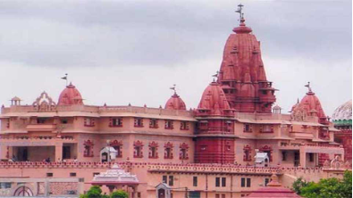
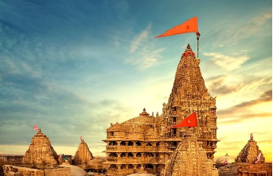
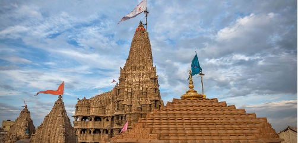
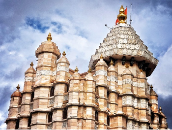
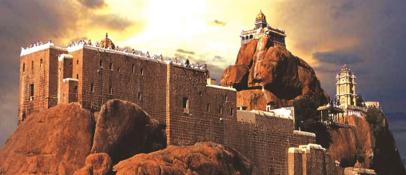
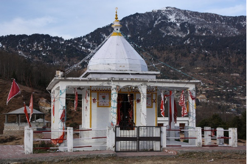

September marks the end of monsoon it will be great time to visit places which are mostly unbearably hot like forts of Jaipur , Udaipur and Jodhpur. Uttarakhand is a popular destination for tourists in September, as the weather is cool and pleasant with average temperatures ranging from 15°C to 25°C.In September, most of India is at the tail end of the monsoon season, so although it can be quite wet, there's not as much rain as July and August. In between the heavy downpours, there's still plenty of sunshine and beautifully hot temperatures, so you can relax on the beach and explore the cultural sights.
7' September -- Janmashtami
Janmashtami is the auspicious day when Lord Krishna took birth on this planet. The birthday of Lord Krishna is celebrated with great fervor and zeal in India in August or September. This year Janmashtami will be celebrated on Wed, Sep 6, 2023 - Thu, Sep 7. As per Hindu Calendar, this festival is celebrated on the 8th day of the dark fortnight which is called the Ashtami of Krishna Paksha. Lord Krishna is believed to be the most powerful soul and incarnation of Lord Vishnu. His birth took place in Mathura for 5,200 Lord Krishna was the eighth child of the Devaki and Vasudeva and he proved the prophecy to kill Kind Kansa. However, King Kansa tried many times to kill Bal Krishna when he was very small but every time his efforts were in vain.

Krishna janmbhoomi temple Mathura
Shri Krishna Janmasthan Temple, also known as Shri Krishna Janmabhoomi temple, is centred on the prison cell where Lord Krishna's parents, Mata Devaki and Vasudeva, were imprisoned by his wicked uncle Kansa.
Aside from the prison cell, the Krishna Janmasthan Temple contains other temples devoted to the god. The holy ambience and purity of the temple infuse the heart with confidence that this is the spot where Lord Krishna revealed himself.
The Krishna Janmasthan Temple sees heavy footfall during holidays such as Janmashtami (The birthday of Lord Krishna), Basant Panchami, Holi, and Diwali.
Dwarkadhish temple
The Dwarkadhish temple, also known as the Jagat Mandir and occasionally spelled Dwarakadheesh, is a Hindu temple dedicated to Krishna, who is worshiped here by the name Dwarkadhish, or 'King of Dwarka'. The temple is located at Dwarka city of Gujarat, India, which is one of the destinations of Char Dham, a Hindu pilgrimage circuit. The main shrine of the five-storied building, supported by 72 pillars, is known as Jagat Mandir or Nija Mandir. Archaeological findings suggest the original temple was built in 200 BCE at the earliest.[1][2][3] The temple was rebuilt and enlarged in the 15th-16th century.[4][5]
According to tradition, the original temple was believed to have been built by Krishna's grandson, Vajranabha, over the hari-griha (Krishna's residential place). The original structure was destroyed by Mahmud Begada in 1472, and subsequently rebuilt in the 15th-16th century, in the Māru-Gurjara style.

17' September -- Vishwakarma Puja
Vishwakarma Jayanti is devoted to Lord Vishwakarma, who is considered as the designer of the world. He created the holy city of Dwarka that was ruled by Krishna. Lord Vishwakarma also created several weapons for Gods. Vishwakarma Day celebrates the birth anniversary of Lord Vishwakarma each year and is observed on 16 or 17 September according to the Gregorian calendar. The day is computed based on Bisuddha Siddhanta. In eastern Indian states such as Tripura, West Bengal, Orissa and Jharkhand, Vishwakarma Day is celebrated as Biswakarma Puja. It is an important day for craftsmen and artisans across the nation. The festival is celebrated after Diwali in Bihar and a few northern states. The Vishwakarma Temple in Guwahati is touted as one of the oldest and few temples in the world dedicated to the Hindu lord, who is considered as the celestial engineer of the universe.

Vishwakarma Temple
Dedicated to Hindu deity Vishwakarma, the Vishwakarma Temple in Guwahati is touted as one of the oldest and few temples in the world dedicated to the Hindu lord, who is considered as the celestial engineer of the universe. In Rig Veda (one of the sacred canonical texts of Hinduism), Lord Vishwakarma is mentioned as the original creator and architect of the cosmos.
This temple, established in the year 1965, is situated at the base of the popular Kamakhya Temple (Kamakhya Gate) in the foothills of Nilachal Hills, and was founded by a priest of the Kamakhya temple, called Bhabakanta Sarmah, in association with Mahabir Prasad Dhirasaria.
18' September -- Ganesh Chaturthi
Ganesh Chaturthi marks the birthday of the beloved elephant-headed Lord Ganesha. Ganesha is known as the God of wealth, sciences, knowledge, wisdom, and prosperity, and that's why most Hindus remember him and seek his blessings before starting any important work. Undoubtedly, Mumbai, the capital city of Maharashtra is the first must-visit destination during Ganesh Chaturthi. Lord Ganesha is known as the patron deity in the whole of Maharashtra and during the festivities, more than 6000 idols are molded and commissioned in Mumbai itself. In 2023, Ganesh Chaturthi will be celebrated on September 18.
Siddhivinayak Temple, Mumbai
The Shree Siddhivinayak Ganapati Mandir is a Hindu temple dedicated to Lord Shri Ganesh. It is located in Prabhadevi, Mumbai, Maharashtra, India.[1] It was originally built by Laxman Vithu and Deubai Patil on 19 November 1801. It is one of the richest temples in India
The temple has a small mandap with the shrine for Siddhi Vinayak ("Ganesha who grants your wish"). The wooden doors to the sanctum are carved with images of the Ashtavinayak (the eight manifestations of Ganesha in Maharashtra). The inner roof of the sanctum is plated with gold, and the central statue is of Ganesha. In the periphery, there is a Hanuman temple as well. The exterior of the temple consists of a dome which is lit up with multiple colors in the evenings and they keep changing every few hours. The statue of Shri Ganesha is located exactly under the dome. The pillars are carved out with the images of ashtvinayak.


Ucchi Pillayar Temple, Tiruchirappalli
Ucchi Pillayar Temple is a 7th-century Hindu temple, one dedicated to Lord Ganesha located a top of Rockfort, Trichy, Tamil Nadu, India. According to legend, this rock is the place where Lord Ganesha ran from King Vibishana, after establishing the Ranganathaswamy deity in Srirangam. Tiruchirapalli Rock Fort is also fondly called as Malaikottai in Tamil. When Lord Rama returned to Ayodhya after rescuing Sita from the captivity of Ravana, Sugriva, Hanuman, and Vibhishana accompanied the Lord to participate in the coronation ceremony.
Vibhishana came to the south with the idol of Sri Ranganatha as a gift from Sri Rama. The attractiveness of the Cauvery River and the scenic atmosphere made him want to relax for a while. There Ganesha was disguised as a small child.
4' July -- Nanda devi festival
Nanda Devi Festival is annually organized in September at the ‘Ma Nanda Devi Temple’ in the Almora district of Uttarakhand, the festival sees a huge crowd of pilgrims and spectators from both, neighboring and far-off areas. Dedicated to Goddess Nanda and Sunanda, the major highlight of the festival is the procession of Nanda Devi carried in a well-decorated ‘Dola’, on the winding streets of Almora. Goddess Nanda is believed to be the guardian deity of the hill town of Almora and other Kumaon regions; the festival is celebrated with great pomp and zeal as an obeisance to the Goddess. A fair is also organized during the festival at the temple premises wherein local artisans and craftsmen sell their handicraft items. Folk songs and dances are also a major part of the grand celebration

Nanda Devi Temple
In the placid vistas of Kumaon hills lies the sacred temple of Goddess Nanda Devi, who is believed to be the consort of Lord Shiva and an incarnation of Goddess Durga. She is also considered to be the patron Goddess of Garhwal and Kumaon region. This temple is believed to be almost 1,000 years old and was dedicated to Goddess Nanda by the kings of the Chand dynasty. Situated in the premises of a Shiva temple, the Nanda Devi Temple features a magnificent monument decorated with a stone amalaka or crown. The intricate carvings on the walls of the temple add to its beauty and reflect the skill of the artisans of that time. These unique carvings emulate lively images and figurines. The temple hosts a grand Nanda Devi fair that attracts thousands of devotees from across Uttarakhand and neighbouring states.